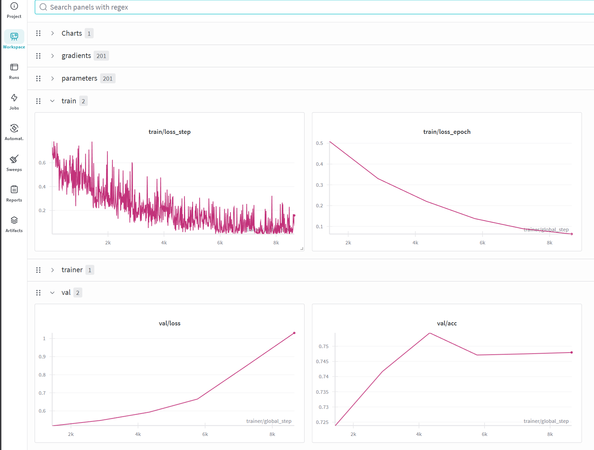
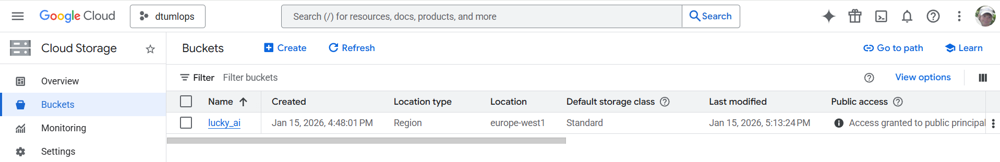
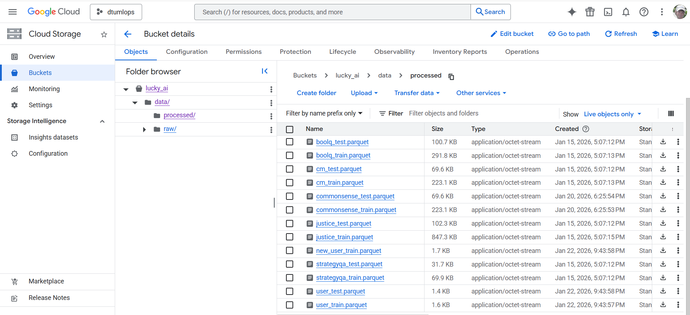
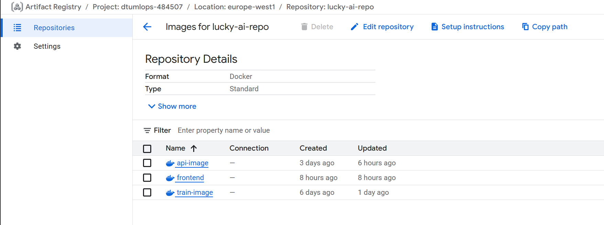
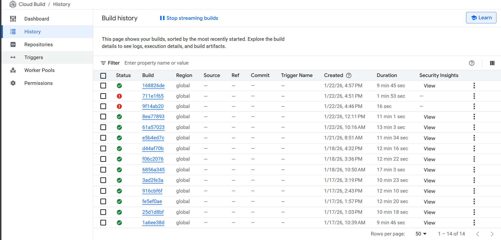
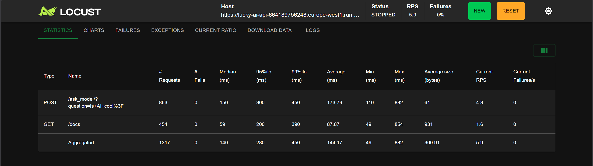
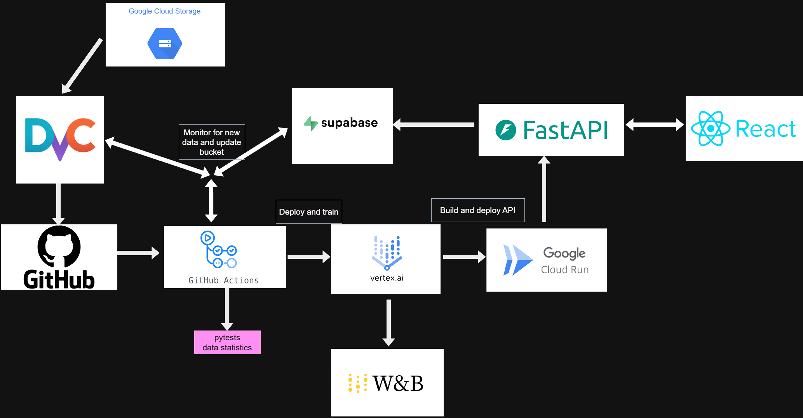

Operations
This is the report template for the exam. Please only remove the text formatted as with three dashes in front and behind like:
--- question 1 fill here ---
Where you instead should add your answers. Any other changes may have unwanted consequences when your report is
auto-generated at the end of the course. For questions where you are asked to include images, start by adding the image
to the figures subfolder (please only use .png, .jpg or .jpeg) and then add the following code in your answer:

In addition to this markdown file, we also provide the report.py script that provides two utility functions:
Running:
bash
python report.py html
Will generate a .html page of your report. After the deadline for answering this template, we will auto-scrape
everything in this reports folder and then use this utility to generate a .html page that will be your serve
as your final hand-in.
Running
bash
python report.py check
Will check your answers in this template against the constraints listed for each question e.g. is your answer too short, too long, or have you included an image when asked. For both functions to work you mustn't rename anything. The script has two dependencies that can be installed with
bash
pip install typer markdown
or
bash
uv add typer markdown
The checklist is exhaustive which means that it includes everything that you could do on the project included in the curriculum in this course. Therefore, we do not expect at all that you have checked all boxes at the end of the project. The parenthesis at the end indicates what module the bullet point is related to. Please be honest in your answers, we will check the repositories and the code to verify your answers.
data.py file such that it downloads whatever data you need and preprocesses it (if necessary) (M6)model.py and a training procedure to train.py and get that running (M6)requirements.txt and requirements_dev.txt file with whatever dependencies that you
are using (M2+M6)pep8) while doing the project (M7)Enter the group number you signed up on
Answer:
6
Enter the study number for each member in the group
Example:
sXXXXXX, sXXXXXX, sXXXXXX
Answer:
s214635, s214619, s193562
A requirement to the project is that you include a third-party package not covered in the course. What framework did you choose to work with and did it help you complete the project?
Recommended answer length: 100-200 words.
Example: We used the third-party framework ... in our project. We used functionality ... and functionality ... from the package to do ... and ... in our project.
Answer:
We used the Hugging Face Transformers library. Specifically, we leveraged the BertModel.from_pretrained and BertTokenizer.from_pretrained functions to load and fine-tune a pre-trained bert-base-uncased model for our ethical classification task. This made it possible and simple to focus on fine-tuning instead of dealing with training a model from the ground.
We also used the psycopg2 adapter to connect our FastAPI service to a remote PostgreSQL database hosted on Supabase. We implemented a couple of database utility functions to log and store user feedback (prompts and predicted labels). To create a front end we used Google AI Studio to create a React app. The frontend communicates with our model via the FastAPI backend.
In the following section we are interested in learning more about you local development environment. This includes how you managed dependencies, the structure of your code and how you managed code quality.
Explain how you managed dependencies in your project? Explain the process a new team member would have to go through to get an exact copy of your environment.
Recommended answer length: 100-200 words
Example: We used ... for managing our dependencies. The list of dependencies was auto-generated using ... . To get a complete copy of our development environment, one would have to run the following commands
Answer:
We used uv as our Python package manager for managing dependencies. All dependencies are defined in the pyproject.toml file, which includes both production dependencies (like PyTorch, transformers, FastAPI, and Weights & Biases) and development dependencies (like pytest, ruff, and pre-commit). We configured platform-specific PyTorch installations, using CUDA 12.1 for Linux and CPU-only for Windows.
To get an exact copy of our development environment, a new team member would need to:
uv by running pip install uvuv sync to install all dependencies with exact versions from the lockfiledvc pull to get the versioned datasetsThis approach ensures reproducible environments across different machines and team members, with automatic resolution of dependency conflicts and platform-specific package variants.
We expect that you initialized your project using the cookiecutter template. Explain the overall structure of your code. What did you fill out? Did you deviate from the template in some way?
Recommended answer length: 100-200 words
Example: From the cookiecutter template we have filled out the ... , ... and ... folder. We have removed the ... folder because we did not use any ... in our project. We have added an ... folder that contains ... for running our experiments.
Answer:
We initialized the project using the 'simple' version of the MLOps cookiecutter template. We deviated from the original template in several ways to better suit our project requirements. We removed the notebooks folder as all our development was done directly in Python scripts. We introduced a frontend directory containing a React application, which communicates with our FastAPI backend. We integrated Data Version Control and thus added a .dvc folder. Besides that, a couple of files were added such as configuration files for Google Cloud services, eg. Vertex AI used for fine-tuning and a configuration file for Cloud Build to build docker images.
Did you implement any rules for code quality and format? What about typing and documentation? Additionally, explain with your own words why these concepts matters in larger projects.
Recommended answer length: 100-200 words.
Example: We used ... for linting and ... for formatting. We also used ... for typing and ... for documentation. These concepts are important in larger projects because ... . For example, typing ...
Answer:
We enforced code quality and consistency by using ruff for both linting and formatting. To automate this process and ensure no non-compliant code reached our repository, we implemented pre-commit hooks that trigger ruff check and ruff format on every commit. We also aimed for type safety by consistently using Python type hints, such as in our LuckyBertModel class and database utility functions. We also used doc strings where it seemed fitting, to provide descriptions of the intended behaviour for methods. These concepts are hihgly important in larger MLOps projects to improve maintainability and seamless collaboration between team members. We could have
In the following section we are interested in how version control was used in your project during development to corporate and increase the quality of your code.
How many tests did you implement and what are they testing in your code?
Recommended answer length: 50-100 words.
Example: In total we have implemented X tests. Primarily we are testing ... and ... as these the most critical parts of our application but also ... .
Answer:
In total we have implemented 11 tests. The format of our data files are tested to ensure they match the expected format and are not corrupted. The generated dataset and data module are also tested along with the dataloader to ensure everything works as intended and is ready to be used for fine-tuning our model.
What is the total code coverage (in percentage) of your code? If your code had a code coverage of 100% (or close to), would you still trust it to be error free? Explain you reasoning.
Recommended answer length: 100-200 words.
Example: The total code coverage of code is X%, which includes all our source code. We are far from 100% coverage of our ** code and even if we were then...*
Answer:
For all our source code (excluding the front end), we have a total code covarage of (only) 43%. Even if we had a coverage of 100% we would still not trust our code to be without errors as the coverage does not explain the quaility of the test, only the lines covered. In other words, we could easily have a test that covers a line but not a given scenario. Any untested scenario could lead to unpredicted (edge-)cases leading to errors that were never tested for. With that said, unit testing is still a great tool to minimize errors and helps avoid introducing new code that introduces new bugs.
Did you workflow include using branches and pull requests? If yes, explain how. If not, explain how branches and pull request can help improve version control.
Recommended answer length: 100-200 words.
Example: We made use of both branches and PRs in our project. In our group, each member had an branch that they worked on in addition to the main branch. To merge code we ...
Answer:
Yes, we made use of branches and pull requests in our work with our project. Whenever a new task was started by someone - e.g. adding the FastAPI - a branch was made to work on the feature. When (thought of as) completed, a pull request would be created and a review requested before the branch was merged to master and deleted. This way of working was nice as it helped avoid conflicts on code being made and kept the master branch more "clean". It also made it much easier to work "isolated" on multiple features at the same time and avoid issues e.g. if two people were both comitting to the master branch leading to changes interferring with each other.
Did you use DVC for managing data in your project? If yes, then how did it improve your project to have version control of your data. If no, explain a case where it would be beneficial to have version control of your data.
Recommended answer length: 100-200 words.
Example: We did make use of DVC in the following way: ... . In the end it helped us in ... for controlling ... part of our pipeline
Answer:
Yes, we used DVC for managing our data. It improved our project by making version control available of our data which in our case is crucial as we incorperate user-supplied data continously. Being able to "jump" to a specific version of our data will be very important down the line if it turns out that e.g. some user-proivded data is degrading our model performance. We configured a Google Cloud Storage bucket as our remote storage backend, allowing all team members to effortlessly synchronize datasets using dvc pull. This setup ensures that our Git repository remains lightweight while maintaining a clear audit trail of data changes.
Discuss you continuous integration setup. What kind of continuous integration are you running (unittesting, linting, etc.)? Do you test multiple operating systems, Python version etc. Do you make use of caching? Feel free to insert a link to one of your GitHub actions workflow.
Recommended answer length: 200-300 words.
Example: We have organized our continuous integration into 3 separate files: one for doing ..., one for running ... testing and one for running ... . In particular for our ..., we used ... .An example of a triggered workflow can be seen here:
Answer:
Our setup is comprehensive, covering testing, data versioning checks, automated data updates, and multi-stage deployment. We use GitHub Actions as our primary CI/CD platform. To ensure cross-platform compatibility, our tests runs on both Ubuntu and Windows.
We have organized our CI into several specialized workflows:
pytest.frontend/ directory and automatically rebuilds and re-deploys the React application to Cloud Run whenever the UI code is updated.In the following section we are interested in learning more about the experimental setup for running your code and especially the reproducibility of your experiments.
How did you configure experiments? Did you make use of config files? Explain with coding examples of how you would run a experiment.
Recommended answer length: 50-100 words.
Example: We used a simple argparser, that worked in the following way: Python my_script.py --lr 1e-3 --batch_size 25
Answer:
We used hydra to configure hyper paramaters for our training as e.g. seen in train.py:
python
@hydra.main(config_path="../../configs", config_name="config.yaml", version_base="1.1")
def train(cfg: DictConfig) -> None:
...
We made it so that these values could also be specified as input via the UI when manually dispatching a github action for training the model.
Reproducibility of experiments are important. Related to the last question, how did you secure that no information is lost when running experiments and that your experiments are reproducible?
Recommended answer length: 100-200 words.
Example: We made use of config files. Whenever an experiment is run the following happens: ... . To reproduce an experiment one would have to do ...
Answer:
To ensure reproducibility, we used hydra for configuration management so that hyperparameters are explicitly defined in YAML files and versioned alongside our code. For data reproducibility, we used DVC to link our training datasets to specific Git commits, allowing us to pull the exact data state used for any historical run from our GCP bucket experiment tracking and artifact management were handled by Weights & Biases. For every run we automatically log the config file and the resulting model as an artifacts. We also used docker to containerize our training environment on Vertex AI. To reproduce an experiment, a team member can checkout the specific git commit, run uv sync, dvc pull, and execute the training command using the logged hydra config.
Upload 1 to 3 screenshots that show the experiments that you have done in W&B (or another experiment tracking service of your choice). This may include loss graphs, logged images, hyperparameter sweeps etc. You can take inspiration from this figure. Explain what metrics you are tracking and why they are important.
Recommended answer length: 200-300 words + 1 to 3 screenshots.
Example: As seen in the first image when have tracked ... and ... which both inform us about ... in our experiments. As seen in the second image we are also tracking ... and ...
Answer:
 As seen on the screenshot above, we logged training loss, validation loss, and validation accuracy. In our case we want our LLM model to respond to (label) a statmenet with "yes" or "no". We get an indication of our models ability to generalize when looking at the validation metrics and we can see that it improves over time. In all honesty we did not focus very much on the actual ML part of this project as we cared much more about learning about all the things surrounding the model it self, i.e. all the MLOps bits. In a more profesional scenario we would probaly have done more (and more interesting) logging, but we kept it quite minimal here and put our time and effort elsewhere. For W&B specifically, we e.g. spent more time learning how to log model files for later use.
Docker is an important tool for creating containerized applications. Explain how you used docker in your experiments/project? Include how you would run your docker images and include a link to one of your docker files.
Recommended answer length: 100-200 words.
Example: For our project we developed several images: one for training, inference and deployment. For example to run the training docker image:
docker run trainer:latest lr=1e-3 batch_size=64. Link to docker file:Answer:
We use 3 different docker images: one for containerizing our training, one for containerizing our API, and one for containerizing our front end. To e.g. run the API doker iamge, you could do docker run --rm -it -p 8080:8080 api-image. Although private, our API image can e.g. be found here: http://europe-west1-docker.pkg.dev/dtumlops-484507/lucky-ai-repo/api-image:latest
When running into bugs while trying to run your experiments, how did you perform debugging? Additionally, did you try to profile your code or do you think it is already perfect?
Recommended answer length: 100-200 words.
Example: Debugging method was dependent on group member. Some just used ... and others used ... . We did a single profiling run of our main code at some point that showed ...
Answer:
The apporach for debgging varied across team members. Some relied on print staments and some also used the inline debugger in VS code. Profiling was not done.
In the following section we would like to know more about your experience when developing in the cloud.
List all the GCP services that you made use of in your project and shortly explain what each service does?
Recommended answer length: 50-200 words.
Example: We used the following two services: Engine and Bucket. Engine is used for... and Bucket is used for...
Answer:
We used Bucket, Vertex AI, and Cloud Run. We used Bucket to store our data, i.e. bucket was the remote storage for our DVC set up. We used Vertex AI for fine-tuning our BERT model, and finally we used Cloud Run to deploy our API image and front end image.
The backbone of GCP is the Compute engine. Explained how you made use of this service and what type of VMs you used?
Recommended answer length: 100-200 words.
Example: We used the compute engine to run our ... . We used instances with the following hardware: ... and we started the using a custom container: ...
Answer:
We did not use compute engine, instead we used Vertex AI and Cloud run.
Insert 1-2 images of your GCP bucket, such that we can see what data you have stored in it. You can take inspiration from this figure.
Answer:


Upload 1-2 images of your GCP artifact registry, such that we can see the different docker images that you have stored. You can take inspiration from this figure.
Answer:

Upload 1-2 images of your GCP cloud build history, so we can see the history of the images that have been build in your project. You can take inspiration from this figure.
Answer:

Did you manage to train your model in the cloud using either the Engine or Vertex AI? If yes, explain how you did it. If not, describe why.
Recommended answer length: 100-200 words.
Example: We managed to train our model in the cloud using the Engine. We did this by ... . The reason we choose the Engine was because ...
Answer:
We managed to fine-tune our model in the cloud using Vertex AI. As can also be seen in /.github/workflows/train_and_deploy.yaml we did so with the command gcloud ai custom-jobs create --project "${PROJECT_ID}" --region "${REGION}" --display-name "${JOB_NAME}" --config custom_job.yaml --format="value(name)". An issue we faced was the we as part of the pipeline needed to wait for training to be done before continuing with the next step (we also asked for input on this in slack but no great solution seems to exist for our scenario with the tools used). We ended up polling for the job status in a loop wating for the status to report it was done.
Did you manage to write an API for your model? If yes, explain how you did it and if you did anything special. If not, explain how you would do it.
Recommended answer length: 100-200 words.
Example: We did manage to write an API for our model. We used FastAPI to do this. We did this by ... . We also added ... to the API to make it more ...
Answer:
We created an API using FastAPI and deployed it using google cloud. An (interesting) problem we initally faced was the we ran into a time-out during deployment. The reason for this was that the first iteration of the API downloaded the model file from W&B using the lifecycle method supported by the FastAPI framework. This meant that when originally starting up, the +1GB file would be downloaded from W&B which took longer time than Cloud Run was willing to wait for the app to be responsive. To fix this, we ended up instead downloading the model file during build time, such that the model file will be baked into the docker image and loaded locally during start up of the API.
Did you manage to deploy your API, either in locally or cloud? If not, describe why. If yes, describe how and preferably how you invoke your deployed service?
Recommended answer length: 100-200 words.
Example: For deployment we wrapped our model into application using ... . We first tried locally serving the model, which worked. Afterwards we deployed it in the cloud, using ... . To invoke the service an user would call
curl -X POST -F "file=@file.json"<weburl>Answer:
As stated above we deployed our FastAPI app using cloud run. After initally testing the docker image locally we deployed it and it is also now part of our CI flow being automatically buildt and deployed when a new version of our fine-tuned model is created (which happens automatically when new user data is recieved which is something that is automatically checked for once a week). If you want to directly interact with the API instead of using our deployed front end, you could e.g. use the following CURL command to run inference on our fine-tuned model: curl -X POST https://lucky-ai-api-664189756248.europe-west1.run.app/ask_model/?question=IS%20MLOps%20a%20good%20course?
Did you perform any unit testing and load testing of your API? If yes, explain how you did it and what results for the load testing did you get. If not, explain how you would do it.
Recommended answer length: 100-200 words.
Example: For unit testing we used ... and for load testing we used ... . The results of the load testing showed that ... before the service crashed.
Answer:
We did not do unit testing on the API, but we did do some simple load testing using locust. We created a simple file, /tests/performancetests/locustfile.py that simulates users visiting both the documentation endpoint and more importantly also the endpoint that performance inference on our model.  As seen on the image above where load testing was performed against our API deployment on Cloud Run, the app was fairly sturdy with no failures and with and average response time for inference of 174 ms. More load testing could be interesting and it could especially be intersting to implement load testing for the functionality of "user feedback" where users can provide data that will be stored in a database.
Did you manage to implement monitoring of your deployed model? If yes, explain how it works. If not, explain how monitoring would help the longevity of your application.
Recommended answer length: 100-200 words.
Example: We did not manage to implement monitoring. We would like to have monitoring implemented such that over time we could measure ... and ... that would inform us about this ... behaviour of our application.
Answer:
We did not implement monitoring using Evedently or Prometheus, but out of the box (as also covered in the course) google cloud platform comes with cloud monitoring that we could use to get insight of e.g. how our deployed API is performing. This does however not cover data drifitng, but instead shows metrics such as request count, latency, and up time.
In the following section we would like you to think about the general structure of your project.
How many credits did you end up using during the project and what service was most expensive? In general what do you think about working in the cloud?
Recommended answer length: 100-200 words.
Example: Group member 1 used ..., Group member 2 used ..., in total ... credits was spend during development. The service costing the most was ... due to ... . Working in the cloud was ...
Answer:
Lasse used $0.15, Andreas used $0.89, and Lauritz used $0.00. Vertex AI was our biggest expense. We enjoyed working in the cloud overall but also found the interface of google cloud console confusing and complex at times. It also felt slightly stressful to know that you are paying for essentially every small action you do. We however all like the automation that comes with using the cloud and especially are fund of how it can be used in a CI/CD workflow. It felt slightly annoying at times that documentation felt difficult to follow espically due to the rapid updates there seems to be made to the different services and how different severices are added while other are slowly being outdated. The overlap of different services were also slighlty confusing.
--- question 27 fill here ---
Did you implement anything extra in your project that is not covered by other questions? Maybe you implemented a frontend for your API, use extra version control features, a drift detection service, a kubernetes cluster etc. If yes, explain what you did and why.
Recommended answer length: 0-200 words.
Example: We implemented a frontend for our API. We did this because we wanted to show the user ... . The frontend was implemented using ...
Answer:
We implemneted a front end for API. The front end was created by using Google AI Studio to create a react app. We also used Supabase for hosting a PostgreSQL database that we used with our API to store new user provided data that we automatically use for automatic updates and re-training of our LLM model.
Include a figure that describes the overall architecture of your system and what services that you make use of. You can take inspiration from this figure. Additionally, in your own words, explain the overall steps in figure.
Recommended answer length: 200-400 words
Example:
The starting point of the diagram is our local setup, where we integrated ... and ... and ... into our code. Whenever we commit code and push to GitHub, it auto triggers ... and ... . From there the diagram shows ...
Answer:

Our MLOps architecture is designed to be a fully automated loop, connecting local development with scalable cloud infrastructure. The starting point of the system is our local setup, where we use uv for dependency management, Hydra for configuration, and DVC for data versioning. Raw datasets are stored in a Google Cloud Storage Bucket, which serves as our DVC remote.
Whenever we push code to the GitHub repository, it triggers several GitHub Action workflows. For every pull request we run a couple of tests using pytest. The core of our automation lies in the "Train + Deploy" pipeline. This workflow orchestrates multiple GCP services. For the training phase, the workflow submits a custom job to Vertex AI. During training, the system logs metrics, hyperparameters, and model checkpoints to Weights & Biases. Once training is complete (managed via our custom polling), the pipeline automatically picks up the latest model artifact and builds and redeploys our FastAPI app using Cloud Run. Our React Frontend is also hosted on Cloud Run and communicates with this API.
Finally, we've implemented a feedback loop: our API is connected to a Supabase (PostgreSQL) database. When users provide feedback on model predictions the data is stored there. A scheduled weekly GitHub Action then pulls this new data from Supabase, runs preprocessing, updates our DVC storage, and triggers a new training and deployment run. This creates a loop where the system continuously improves based on real-world usage.
Discuss the overall struggles of the project. Where did you spend most time and what did you do to overcome these challenges?
Recommended answer length: 200-400 words.
Example: The biggest challenges in the project was using ... tool to do ... . The reason for this was ...
Answer:
As students new to MLOps, our biggest struggle was not the machine learning itself, but the "plumbing" required to connect different cloud services into a cohesive and automated pipeline. We spent a significant amount of time overcoming technical issues in our CI/CD workflows and deployment strategy.
An example of a challenge was the Cloud Run deployment timeout. Initially, our FastAPI application used the lifespan event to download the ~1GB fine-tuned model file from weights & Biases at startup. This caused the container to exceed Cloud Run's health check timeout and caused deployment failures. We overcame this by changing our Docker build process to "bake" the model artifact directly into the image during the build stage using a downloader script.
Another hurdle was orchestrating Vertex AI within GitHub Actions. We wanted a fully automated Train + Deploy pipeline, but gcloud ai custom-jobs create is asynchronous. There was no straightforward fix to wait for the training to finish and then retrieve the fine-tuned model artifact before proceeding to the deployment step. To solve this we ended up implementing a bash polling loop in our GitHub Action that periodically checks the job status via the GCP API and then only proceeding when the training reaches a succeeded state.
State the individual contributions of each team member. This is required information from DTU, because we need to make sure all members contributed actively to the project. Additionally, state if/how you have used generative AI tools in your project.
Recommended answer length: 50-300 words.
Example: Student sXXXXXX was in charge of developing of setting up the initial cookie cutter project and developing of the docker containers for training our applications. Student sXXXXXX was in charge of training our models in the cloud and deploying them afterwards. All members contributed to code by... We have used ChatGPT to help debug our code. Additionally, we used GitHub Copilot to help write some of our code. Answer:
Overall there was a big overlap in contributions and generally everyone was involved by providing input, feedback, and suggestions to the work done. s193562 was in charche of setting up DVC and using google buckets as well as setting up the PostgreSQL database. s214635 was in charce of setting up the training on Vertex AI and creating the front end. s214619 was in charge of creating the API
{kind=link}
{kind=link}
{kind=link}
{kind=link}
{kind=link}